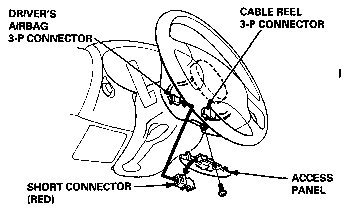
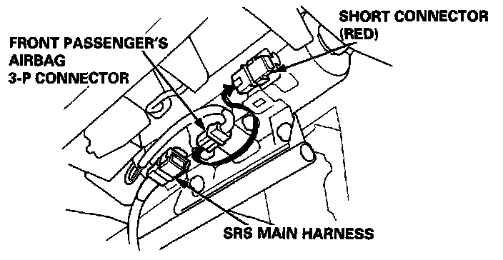

Connecting Short Connectors
CONNECTING THE SHORT CONNECTORSWARNING: TO AVOID ACCIDENTAL DEPLOYMENT AND POSSIBLE INJURY, ALWAYS CONNECT THE PROTECTIVE SHORT CONNECTOR TO THE DRIVER'S AIRBAG CONNECTOR AND, ON CARS EQUIPPED WITH FRONT PASSENGER'S AIRBAG, CONNECT PROTECTIVE SHORT CONNECTORS TO THE DRIVER'S AND FRONT PASSENGER'S AIRBAG BEFORE WORKING NEAR ANY SRS WIRING.
NOTE: The original radio has a coded theft protection circuit. Be sure to get the customer's code number before disconnecting the battery cables.
1. Disconnect the battery negative cable, then disconnect the positive cable.
2. Connect the short connector(s) (RED):
Driver's Side:
- Remove the access panel from the steering wheel, then remove the short
connector (RED) from the panel.

- Disconnect the connector between the driver's airbag and cable reel, then
connect the short connector (RED) to the airbag side of the connector.
Front Passenger's Side:
- Remove the glove box damper, and then remove the glove box.

- Disconnect the connector between the front passenger's airbag and SRS main harness, then connect the short connector (RED) to the airbag side of the connector.